Adventures of Huckleberry Finn
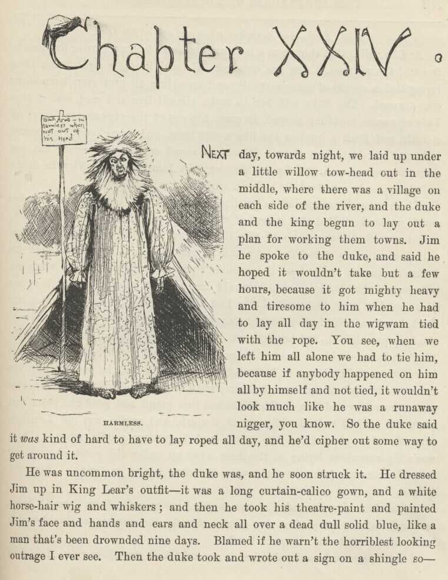
CHAPTER XXIV.
NEXT day, towards night, we laid up under a little willow towhead out in the middle,
where there was a village on each side of the river, and the duke and the king begun
to lay out a plan for working them towns. Jim he spoke to the duke, and said he hoped
it wouldn't take but a few hours, because it got mighty heavy and tiresome to him
when he had to lay all day in the wigwam tied with the rope. You see, when we left
him all alone we had to tie him, because if anybody happened on to him all by himself
and not tied it wouldn't look much like he was a runaway nigger, you know. So the
duke said it was kind of hard to have to lay roped all day, and he'd cipher out some way to get around
it.
He was uncommon bright, the duke was, and he soon struck it. He dressed Jim up in
King Lear's outfit—it was a long curtain-calico gown, and a white horse-hair wig and
whiskers; and then he took his theater paint and painted Jim's face and hands and
ears and neck all over a dead, dull, solid blue, like a man that's been drownded nine
days. Blamed if he warn't the horriblest looking outrage I ever see. Then the duke
took and wrote out a sign on a shingle so:
Sick Arab—but harmless when not out of his head.
And he nailed that shingle to a lath, and stood the lath up four or five foot in front
of the wigwam. Jim was satisfied. He said it was a sight better than lying tied
a couple of years every day, and trembling all over every time there was a sound.
The duke told him to make himself free and easy, and if anybody ever come meddling
around, he must hop out of the wigwam, and carry on a little, and fetch a howl or
two like a wild beast, and he reckoned they would light out and leave him alone. Which
was sound enough judgment; but you take the average man, and he wouldn't wait for
him to howl. Why, he didn't only look like he was dead, he looked considerable more
than that.
These rapscallions wanted to try the Nonesuch again, because there was so much money
in it, but they judged it wouldn't be safe, because maybe the news might a worked
along down by this time. They couldn't hit no project that suited exactly; so at
last the duke said he reckoned he'd lay off and work his brains an hour or two and
see if he couldn't put up something on the Arkansaw village; and the king he allowed
he would drop over to t'other village without any plan, but just trust in Providence
to lead him the profitable way—meaning the devil, I reckon. We had all bought store
clothes where we stopped last; and now the king put his'n on, and he told me to put
mine on. I done it, of course. The king's duds was all black, and he did look real
swell and starchy. I never knowed how clothes could change a body before. Why, before,
he looked like the orneriest old rip that ever was; but now, when he'd take off his
new white beaver and make a bow and do a smile, he looked that grand and good and
pious that you'd say he had walked right out of the ark, and maybe was old Leviticus
himself. Jim cleaned up the canoe, and I got my paddle ready. There was a big steamboat
laying at the shore away up under the point, about three mile above the town—been
there a couple of hours, taking on freight. Says the king:
"Seein' how I'm dressed, I reckon maybe I better arrive down from St. Louis or Cincinnati,
or some other big place. Go for the steamboat, Huckleberry; we'll come down to the
village on her."
I didn't have to be ordered twice to go and take a steamboat ride. I fetched the
shore a half a mile above the village, and then went scooting along the bluff bank
in the easy water. Pretty soon we come to a nice innocent-looking young country jake
setting on a log swabbing the sweat off of his face, for it was powerful warm weather;
and he had a couple of big carpet-bags by him.
"Run her nose in shore," says the king. I done it. "Wher' you bound for, young man?"
"For the steamboat; going to Orleans."
"Git aboard," says the king. "Hold on a minute, my servant 'll he'p you with them
bags. Jump out and he'p the gentleman, Adolphus"—meaning me, I see.
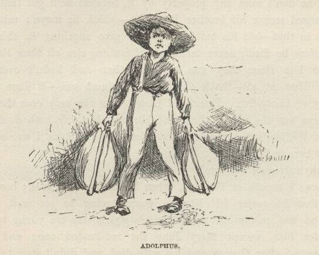
I done so, and then we all three started on again. The young chap was mighty thankful;
said it was tough work toting his baggage such weather. He asked the king where he
was going, and the king told him he'd come down the river and landed at the other
village this morning, and now he was going up a few mile to see an old friend on a
farm up there. The young fellow says:
"When I first see you I says to myself, 'It's Mr. Wilks, sure, and he come mighty
near getting here in time.' But then I says again, 'No, I reckon it ain't him, or
else he wouldn't be paddling up the river.' You ain't him, are you?"
"No, my name's Blodgett—Elexander Blodgett—Reverend Elexander Blodgett, I s'pose I must say, as I'm one o' the Lord's poor servants.
But still I'm jist as able to be sorry for Mr. Wilks for not arriving in time, all
the same, if he's missed anything by it—which I hope he hasn't."
"Well, he don't miss any property by it, because he'll get that all right; but he's
missed seeing his brother Peter die—which he mayn't mind, nobody can tell as to that—but
his brother would a give anything in this world to see him before he died; never talked about nothing else all these three weeks; hadn't seen
him since they was boys together—and hadn't ever seen his brother William at all—that's
the deef and dumb one—William ain't more than thirty or thirty-five. Peter and George
were the only ones that come out here; George was the married brother; him and his
wife both died last year. Harvey and William's the only ones that's left now; and,
as I was saying, they haven't got here in time."
"Did anybody send 'em word?"
"Oh, yes; a month or two ago, when Peter was first took; because Peter said then that
he sorter felt like he warn't going to get well this time. You see, he was pretty
old, and George's g'yirls was too young to be much company for him, except Mary Jane,
the red-headed one; and so he was kinder lonesome after George and his wife died,
and didn't seem to care much to live. He most desperately wanted to see Harvey—and
William, too, for that matter—because he was one of them kind that can't bear to make
a will. He left a letter behind for Harvey, and said he'd told in it where his money
was hid, and how he wanted the rest of the property divided up so George's g'yirls
would be all right—for George didn't leave nothing. And that letter was all they
could get him to put a pen to."
"Why do you reckon Harvey don't come? Wher' does he live?"
"Oh, he lives in England—Sheffield—preaches there—hasn't ever been in this country.
He hasn't had any too much time—and besides he mightn't a got the letter at all,
you know."
"Too bad, too bad he couldn't a lived to see his brothers, poor soul. You going to
Orleans, you say?"
"Yes, but that ain't only a part of it. I'm going in a ship, next Wednesday, for
Ryo Janeero, where my uncle lives."
"It's a pretty long journey. But it'll be lovely; wisht I was a-going. Is Mary Jane
the oldest? How old is the others?"
"Mary Jane's nineteen, Susan's fifteen, and Joanna's about fourteen—that's the one
that gives herself to good works and has a hare-lip."
"Poor things! to be left alone in the cold world so."
"Well, they could be worse off. Old Peter had friends, and they ain't going to let
them come to no harm. There's Hobson, the Babtis' preacher; and Deacon Lot Hovey,
and Ben Rucker, and Abner Shackleford, and Levi Bell, the lawyer; and Dr. Robinson,
and their wives, and the widow Bartley, and—well, there's a lot of them; but these
are the ones that Peter was thickest with, and used to write about sometimes, when
he wrote home; so Harvey 'll know where to look for friends when he gets here."
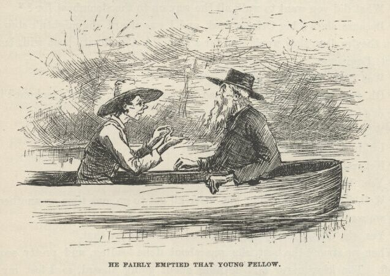
Well, the old man went on asking questions till he just fairly emptied that young
fellow. Blamed if he didn't inquire about everybody and everything in that blessed
town, and all about the Wilkses; and about Peter's business—which was a tanner; and
about George's—which was a carpenter; and about Harvey's—which was a dissentering
minister; and so on, and so on. Then he says:
"What did you want to walk all the way up to the steamboat for?"
"Because she's a big Orleans boat, and I was afeard she mightn't stop there. When
they're deep they won't stop for a hail. A Cincinnati boat will, but this is a St.
Louis one."
"Was Peter Wilks well off?"
"Oh, yes, pretty well off. He had houses and land, and it's reckoned he left three
or four thousand in cash hid up som'ers."
"When did you say he died?"
"I didn't say, but it was last night."
"Funeral to-morrow, likely?"
"Yes, 'bout the middle of the day."
"Well, it's all terrible sad; but we've all got to go, one time or another. So what
we want to do is to be prepared; then we're all right."
"Yes, sir, it's the best way. Ma used to always say that."
When we struck the boat she was about done loading, and pretty soon she got off. The
king never said nothing about going aboard, so I lost my ride, after all. When the
boat was gone the king made me paddle up another mile to a lonesome place, and then
he got ashore and says:
"Now hustle back, right off, and fetch the duke up here, and the new carpet-bags.
And if he's gone over to t'other side, go over there and git him. And tell him to
git himself up regardless. Shove along, now."
I see what he was up to; but I never said nothing, of course. When I got back with the duke we
hid the canoe, and then they set down on a log, and the king told him everything,
just like the young fellow had said it—every last word of it. And all the time he
was a-doing it he tried to talk like an Englishman; and he done it pretty well, too,
for a slouch. I can't imitate him, and so I ain't a-going to try to; but he really
done it pretty good. Then he says:
"How are you on the deef and dumb, Bilgewater?"
The duke said, leave him alone for that; said he had played a deef and dumb person
on the histronic boards. So then they waited for a steamboat.
About the middle of the afternoon a couple of little boats come along, but they didn't
come from high enough up the river; but at last there was a big one, and they hailed
her. She sent out her yawl, and we went aboard, and she was from Cincinnati; and
when they found we only wanted to go four or five mile they was booming mad, and gave
us a cussing, and said they wouldn't land us. But the king was ca'm. He says:
"If gentlemen kin afford to pay a dollar a mile apiece to be took on and put off in
a yawl, a steamboat kin afford to carry 'em, can't it?"
So they softened down and said it was all right; and when we got to the village they
yawled us ashore. About two dozen men flocked down when they see the yawl a-coming,
and when the king says:
"Kin any of you gentlemen tell me wher' Mr. Peter Wilks lives?" they give a glance
at one another, and nodded their heads, as much as to say, "What d' I tell you?" Then
one of them says, kind of soft and gentle:
"I'm sorry sir, but the best we can do is to tell you where he did live yesterday evening."
Sudden as winking the ornery old cretur went an to smash, and fell up against the
man, and put his chin on his shoulder, and cried down his back, and says:
"Alas, alas, our poor brother—gone, and we never got to see him; oh, it's too, too
hard!"
Then he turns around, blubbering, and makes a lot of idiotic signs to the duke on
his hands, and blamed if he didn't drop a carpet-bag and bust out a-crying. If they
warn't the beatenest lot, them two frauds, that ever I struck.
Well, the men gathered around and sympathized with them, and said all sorts of kind
things to them, and carried their carpet-bags up the hill for them, and let them lean
on them and cry, and told the king all about his brother's last moments, and the king
he told it all over again on his hands to the duke, and both of them took on about
that dead tanner like they'd lost the twelve disciples. Well, if ever I struck anything
like it, I'm a nigger. It was enough to make a body ashamed of the human race.
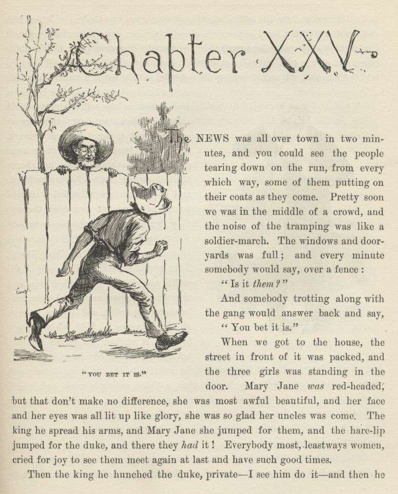
CHAPTER XXV.
THE news was all over town in two minutes, and you could see the people tearing down
on the run from every which way, some of them putting on their coats as they come.
Pretty soon we was in the middle of a crowd, and the noise of the tramping was like
a soldier march. The windows and dooryards was full; and every minute somebody would
say, over a fence:
"Is it them?"
And somebody trotting along with the gang would answer back and say:
"You bet it is."
When we got to the house the street in front of it was packed, and the three girls
was standing in the door. Mary Jane was red-headed, but that don't make no difference, she was most awful beautiful, and
her face and her eyes was all lit up like glory, she was so glad her uncles was come.
The king he spread his arms, and Mary Jane she jumped for them, and the hare-lip jumped
for the duke, and there they had it! Everybody most, leastways women, cried for joy
to see them meet again at last and have such good times.
Then the king he hunched the duke private—I see him do it—and then he looked around
and see the coffin, over in the corner on two chairs; so then him and the duke, with
a hand across each other's shoulder, and t'other hand to their eyes, walked slow and
solemn over there, everybody dropping back to give them room, and all the talk and
noise stopping, people saying "Sh!" and all the men taking their hats off and drooping
their heads, so you could a heard a pin fall. And when they got there they bent over
and looked in the coffin, and took one sight, and then they bust out a-crying so you
could a heard them to Orleans, most; and then they put their arms around each other's
necks, and hung their chins over each other's shoulders; and then for three minutes,
or maybe four, I never see two men leak the way they done. And, mind you, everybody
was doing the same; and the place was that damp I never see anything like it. Then
one of them got on one side of the coffin, and t'other on t'other side, and they kneeled
down and rested their foreheads on the coffin, and let on to pray all to themselves.
Well, when it come to that it worked the crowd like you never see anything like it,
and everybody broke down and went to sobbing right out loud—the poor girls, too; and
every woman, nearly, went up to the girls, without saying a word, and kissed them,
solemn, on the forehead, and then put their hand on their head, and looked up towards
the sky, with the tears running down, and then busted out and went off sobbing and
swabbing, and give the next woman a show. I never see anything so disgusting.
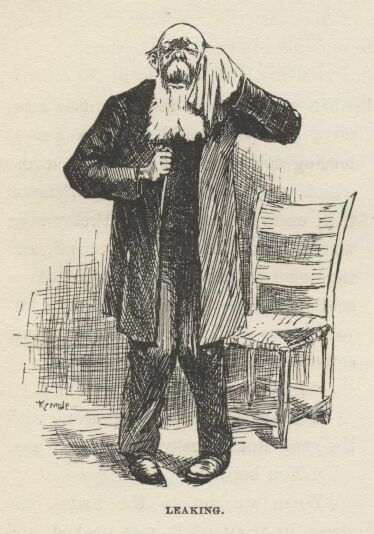
Well, by and by the king he gets up and comes forward a little, and works himself
up and slobbers out a speech, all full of tears and flapdoodle about its being a sore
trial for him and his poor brother to lose the diseased, and to miss seeing diseased
alive after the long journey of four thousand mile, but it's a trial that's sweetened
and sanctified to us by this dear sympathy and these holy tears, and so he thanks
them out of his heart and out of his brother's heart, because out of their mouths
they can't, words being too weak and cold, and all that kind of rot and slush, till
it was just sickening; and then he blubbers out a pious goody-goody Amen, and turns
himself loose and goes to crying fit to bust.
And the minute the words were out of his mouth somebody over in the crowd struck up
the doxolojer, and everybody joined in with all their might, and it just warmed you
up and made you feel as good as church letting out. Music is a good thing; and after
all that soul-butter and hogwash I never see it freshen up things so, and sound so
honest and bully.
Then the king begins to work his jaw again, and says how him and his nieces would
be glad if a few of the main principal friends of the family would take supper here
with them this evening, and help set up with the ashes of the diseased; and says if
his poor brother laying yonder could speak he knows who he would name, for they was
names that was very dear to him, and mentioned often in his letters; and so he will
name the same, to wit, as follows, vizz.:—Rev. Mr. Hobson, and Deacon Lot Hovey, and
Mr. Ben Rucker, and Abner Shackleford, and Levi Bell, and Dr. Robinson, and their
wives, and the widow Bartley.
Rev. Hobson and Dr. Robinson was down to the end of the town a-hunting together—that
is, I mean the doctor was shipping a sick man to t'other world, and the preacher was
pinting him right. Lawyer Bell was away up to Louisville on business. But the rest
was on hand, and so they all come and shook hands with the king and thanked him and
talked to him; and then they shook hands with the duke and didn't say nothing, but
just kept a-smiling and bobbing their heads like a passel of sapheads whilst he made
all sorts of signs with his hands and said "Goo-goo—goo-goo-goo" all the time, like
a baby that can't talk.
So the king he blattered along, and managed to inquire about pretty much everybody
and dog in town, by his name, and mentioned all sorts of little things that happened
one time or another in the town, or to George's family, or to Peter. And he always
let on that Peter wrote him the things; but that was a lie: he got every blessed
one of them out of that young flathead that we canoed up to the steamboat.
Then Mary Jane she fetched the letter her father left behind, and the king he read
it out loud and cried over it. It give the dwelling-house and three thousand dollars,
gold, to the girls; and it give the tanyard (which was doing a good business), along
with some other houses and land (worth about seven thousand), and three thousand dollars
in gold to Harvey and William, and told where the six thousand cash was hid down cellar.
So these two frauds said they'd go and fetch it up, and have everything square and
above-board; and told me to come with a candle. We shut the cellar door behind us,
and when they found the bag they spilt it out on the floor, and it was a lovely sight,
all them yaller-boys. My, the way the king's eyes did shine! He slaps the duke on
the shoulder and says:
"Oh, this ain't bully nor noth'n! Oh, no, I reckon not! Why, bully, it beats the Nonesuch, don't it?"
The duke allowed it did. They pawed the yaller-boys, and sifted them through their
fingers and let them jingle down on the floor; and the king says:
"It ain't no use talkin'; bein' brothers to a rich dead man and representatives of
furrin heirs that's got left is the line for you and me, Bilge. Thish yer comes of
trust'n to Providence. It's the best way, in the long run. I've tried 'em all, and
ther' ain't no better way."
Most everybody would a been satisfied with the pile, and took it on trust; but no,
they must count it. So they counts it, and it comes out four hundred and fifteen
dollars short. Says the king:
"Dern him, I wonder what he done with that four hundred and fifteen dollars?"
They worried over that awhile, and ransacked all around for it. Then the duke says:
"Well, he was a pretty sick man, and likely he made a mistake—I reckon that's the
way of it. The best way's to let it go, and keep still about it. We can spare it."
"Oh, shucks, yes, we can spare it. I don't k'yer noth'n 'bout that—it's the count I'm thinkin' about. We want to be awful square and open and above-board here, you
know. We want to lug this h-yer money up stairs and count it before everybody—then
ther' ain't noth'n suspicious. But when the dead man says ther's six thous'n dollars,
you know, we don't want to—"
"Hold on," says the duke. "Le's make up the deffisit," and he begun to haul out yaller-boys
out of his pocket.
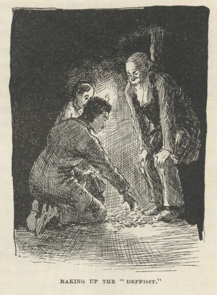
"It's a most amaz'n' good idea, duke—you have got a rattlin' clever head on you," says the king. "Blest if the old Nonesuch ain't
a heppin' us out agin," and he begun to haul out yaller-jackets and stack them up.
It most busted them, but they made up the six thousand clean and clear.
"Say," says the duke, "I got another idea. Le's go up stairs and count this money,
and then take and give it to the girls."
"Good land, duke, lemme hug you! It's the most dazzling idea 'at ever a man struck.
You have cert'nly got the most astonishin' head I ever see. Oh, this is the boss
dodge, ther' ain't no mistake 'bout it. Let 'em fetch along their suspicions now
if they want to—this 'll lay 'em out."
When we got up-stairs everybody gethered around the table, and the king he counted
it and stacked it up, three hundred dollars in a pile—twenty elegant little piles.
Everybody looked hungry at it, and licked their chops. Then they raked it into the
bag again, and I see the king begin to swell himself up for another speech. He says:
"Friends all, my poor brother that lays yonder has done generous by them that's left
behind in the vale of sorrers. He has done generous by these yer poor little lambs
that he loved and sheltered, and that's left fatherless and motherless. Yes, and
we that knowed him knows that he would a done more generous by 'em if he hadn't ben afeard o' woundin' his dear William and me. Now,
wouldn't he? Ther' ain't no question 'bout it in my mind. Well, then, what kind o' brothers would it be that 'd stand in his way at
sech a time? And what kind o' uncles would it be that 'd rob—yes, rob—sech poor sweet lambs as these 'at he loved so at sech a time? If I know William—and
I think I do—he—well, I'll jest ask him." He turns around and begins to make a lot of signs
to the duke with his hands, and the duke he looks at him stupid and leather-headed
a while; then all of a sudden he seems to catch his meaning, and jumps for the king,
goo-gooing with all his might for joy, and hugs him about fifteen times before he
lets up. Then the king says, "I knowed it; I reckon that 'll convince anybody the way he feels about it. Here, Mary Jane, Susan, Joanner, take the money—take it all. It's the gift of him that lays yonder, cold but joyful."
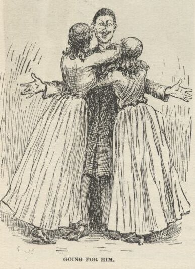
Mary Jane she went for him, Susan and the hare-lip went for the duke, and then such
another hugging and kissing I never see yet. And everybody crowded up with the tears
in their eyes, and most shook the hands off of them frauds, saying all the time:
"You dear good souls!—how lovely!—how could you!"
Well, then, pretty soon all hands got to talking about the diseased again, and how
good he was, and what a loss he was, and all that; and before long a big iron-jawed
man worked himself in there from outside, and stood a-listening and looking, and not
saying anything; and nobody saying anything to him either, because the king was talking
and they was all busy listening. The king was saying—in the middle of something he'd
started in on—
"—they bein' partickler friends o' the diseased. That's why they're invited here
this evenin'; but tomorrow we want all to come—everybody; for he respected everybody, he liked everybody, and so it's fitten
that his funeral orgies sh'd be public."
And so he went a-mooning on and on, liking to hear himself talk, and every little
while he fetched in his funeral orgies again, till the duke he couldn't stand it no
more; so he writes on a little scrap of paper, "Obsequies, you old fool," and folds it up, and goes to goo-gooing and reaching it over people's
heads to him. The king he reads it and puts it in his pocket, and says:
"Poor William, afflicted as he is, his heart's aluz right. Asks me to invite everybody to come to the funeral—wants me to make
'em all welcome. But he needn't a worried—it was jest what I was at."
Then he weaves along again, perfectly ca'm, and goes to dropping in his funeral orgies
again every now and then, just like he done before. And when he done it the third
time he says:
"I say orgies, not because it's the common term, because it ain't—obsequies bein'
the common term—but because orgies is the right term. Obsequies ain't used in England
no more now—it's gone out. We say orgies now in England. Orgies is better, because
it means the thing you're after more exact. It's a word that's made up out'n the
Greek orgo, outside, open, abroad; and the Hebrew jeesum, to plant, cover up; hence inter. So, you see, funeral orgies is an open er public funeral."
He was the worst I ever struck. Well, the iron-jawed man he laughed right in his face. Everybody
was shocked. Everybody says, "Why, doctor!" and Abner Shackleford says:
"Why, Robinson, hain't you heard the news? This is Harvey Wilks."
The king he smiled eager, and shoved out his flapper, and says:
"Is it my poor brother's dear good friend and physician? I—"
"Keep your hands off of me!" says the doctor. "You talk like an Englishman, don't you? It's the worst imitation I ever heard. You Peter Wilks's brother! You're a fraud, that's what you are!"
Well, how they all took on! They crowded around the doctor and tried to quiet him
down, and tried to explain to him and tell him how Harvey 'd showed in forty ways
that he was Harvey, and knowed everybody by name, and the names of the very dogs, and begged
and begged him not to hurt Harvey's feelings and the poor girl's feelings, and all that. But
it warn't no use; he stormed right along, and said any man that pretended to be an
Englishman and couldn't imitate the lingo no better than what he did was a fraud and
a liar. The poor girls was hanging to the king and crying; and all of a sudden the
doctor ups and turns on them. He says:
"I was your father's friend, and I'm your friend; and I warn you as a friend, and
an honest one that wants to protect you and keep you out of harm and trouble, to turn
your backs on that scoundrel and have nothing to do with him, the ignorant tramp,
with his idiotic Greek and Hebrew, as he calls it. He is the thinnest kind of an
impostor—has come here with a lot of empty names and facts which he picked up somewheres,
and you take them for proofs, and are helped to fool yourselves by these foolish friends here, who ought to know
better. Mary Jane Wilks, you know me for your friend, and for your unselfish friend,
too. Now listen to me; turn this pitiful rascal out—I beg you to do it. Will you?"
Mary Jane straightened herself up, and my, but she was handsome! She says:
"Here is my answer." She hove up the bag of money and put it in the king's hands, and
says, "Take this six thousand dollars, and invest for me and my sisters any way you
want to, and don't give us no receipt for it."
Then she put her arm around the king on one side, and Susan and the hare-lip done
the same on the other. Everybody clapped their hands and stomped on the floor like
a perfect storm, whilst the king held up his head and smiled proud. The doctor says:
"All right; I wash my hands of the matter. But I warn you all that a time 's coming when you're going
to feel sick whenever you think of this day." And away he went.
"All right, doctor," says the king, kinder mocking him; "we'll try and get 'em to
send for you;" which made them all laugh, and they said it was a prime good hit.
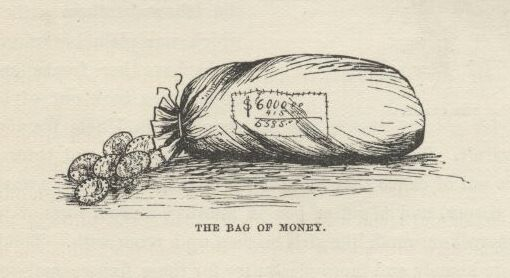
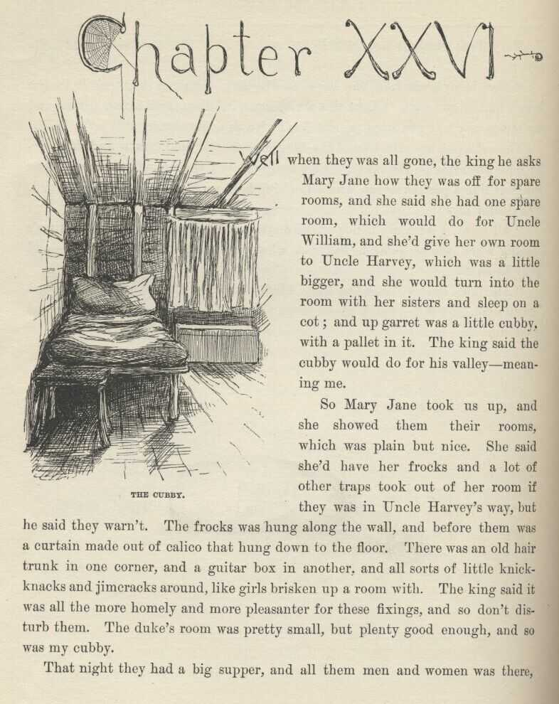
CHAPTER XXVI.
WELL, when they was all gone the king he asks Mary Jane how they was off for spare
rooms, and she said she had one spare room, which would do for Uncle William, and
she'd give her own room to Uncle Harvey, which was a little bigger, and she would
turn into the room with her sisters and sleep on a cot; and up garret was a little
cubby, with a pallet in it. The king said the cubby would do for his valley—meaning
me.
So Mary Jane took us up, and she showed them their rooms, which was plain but nice.
She said she'd have her frocks and a lot of other traps took out of her room if they
was in Uncle Harvey's way, but he said they warn't. The frocks was hung along the
wall, and before them was a curtain made out of calico that hung down to the floor.
There was an old hair trunk in one corner, and a guitar-box in another, and all sorts
of little knickknacks and jimcracks around, like girls brisken up a room with. The
king said it was all the more homely and more pleasanter for these fixings, and so
don't disturb them. The duke's room was pretty small, but plenty good enough, and
so was my cubby.
That night they had a big supper, and all them men and women was there, and I stood
behind the king and the duke's chairs and waited on them, and the niggers waited on
the rest. Mary Jane she set at the head of the table, with Susan alongside of her,
and said how bad the biscuits was, and how mean the preserves was, and how ornery
and tough the fried chickens was—and all that kind of rot, the way women always do
for to force out compliments; and the people all knowed everything was tiptop, and
said so—said "How do you get biscuits to brown so nice?" and "Where, for the land's sake, did you get these amaz'n pickles?" and all that kind of humbug talky-talk, just the way
people always does at a supper, you know.
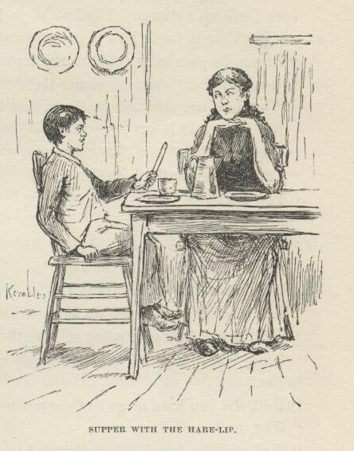
And when it was all done me and the hare-lip had supper in the kitchen off of the
leavings, whilst the others was helping the niggers clean up the things. The hare-lip
she got to pumping me about England, and blest if I didn't think the ice was getting
mighty thin sometimes. She says:
"Did you ever see the king?"
"Who? William Fourth? Well, I bet I have—he goes to our church." I knowed he was
dead years ago, but I never let on. So when I says he goes to our church, she says:
"What—regular?"
"Yes—regular. His pew's right over opposite ourn—on t'other side the pulpit."
"I thought he lived in London?"
"Well, he does. Where would he live?"
"But I thought you lived in Sheffield?"
I see I was up a stump. I had to let on to get choked with a chicken bone, so as
to get time to think how to get down again. Then I says:
"I mean he goes to our church regular when he's in Sheffield. That's only in the
summer time, when he comes there to take the sea baths."
"Why, how you talk—Sheffield ain't on the sea."
"Well, who said it was?"
"Why, you did."
"I didn't nuther."
"You did!"
"I didn't."
"You did."
"I never said nothing of the kind."
"Well, what did you say, then?"
"Said he come to take the sea baths—that's what I said."
"Well, then, how's he going to take the sea baths if it ain't on the sea?"
"Looky here," I says; "did you ever see any Congress-water?"
"Yes."
"Well, did you have to go to Congress to get it?"
"Why, no."
"Well, neither does William Fourth have to go to the sea to get a sea bath."
"How does he get it, then?"
"Gets it the way people down here gets Congress-water—in barrels. There in the palace
at Sheffield they've got furnaces, and he wants his water hot. They can't bile that
amount of water away off there at the sea. They haven't got no conveniences for it."
"Oh, I see, now. You might a said that in the first place and saved time."
When she said that I see I was out of the woods again, and so I was comfortable and
glad. Next, she says:
"Do you go to church, too?"
"Yes—regular."
"Where do you set?"
"Why, in our pew."
"Whose pew?"
"Why, ourn—your Uncle Harvey's."
"His'n? What does he want with a pew?"
"Wants it to set in. What did you reckon he wanted with it?"
"Why, I thought he'd be in the pulpit."
Rot him, I forgot he was a preacher. I see I was up a stump again, so I played another
chicken bone and got another think. Then I says:
"Blame it, do you suppose there ain't but one preacher to a church?"
"Why, what do they want with more?"
"What!—to preach before a king? I never did see such a girl as you. They don't have
no less than seventeen."
"Seventeen! My land! Why, I wouldn't set out such a string as that, not if I never got to glory. It must take 'em a week."
"Shucks, they don't all of 'em preach the same day—only one of 'em."
"Well, then, what does the rest of 'em do?"
"Oh, nothing much. Loll around, pass the plate—and one thing or another. But mainly
they don't do nothing."
"Well, then, what are they for?"
"Why, they're for style. Don't you know nothing?"
"Well, I don't want to know no such foolishness as that. How is servants treated in England? Do they
treat 'em better 'n we treat our niggers?"
"No! A servant ain't nobody there. They treat them worse than dogs."
"Don't they give 'em holidays, the way we do, Christmas and New Year's week, and Fourth
of July?"
"Oh, just listen! A body could tell you hain't ever been to England by that. Why, Hare-l—why, Joanna, they never see a holiday
from year's end to year's end; never go to the circus, nor theater, nor nigger shows,
nor nowheres."
"Nor church?"
"Nor church."
"But you always went to church."
Well, I was gone up again. I forgot I was the old man's servant. But next minute
I whirled in on a kind of an explanation how a valley was different from a common
servant and had to go to church whether he wanted to or not, and set with the family, on account
of its being the law. But I didn't do it pretty good, and when I got done I see she
warn't satisfied. She says:
"Honest injun, now, hain't you been telling me a lot of lies?"
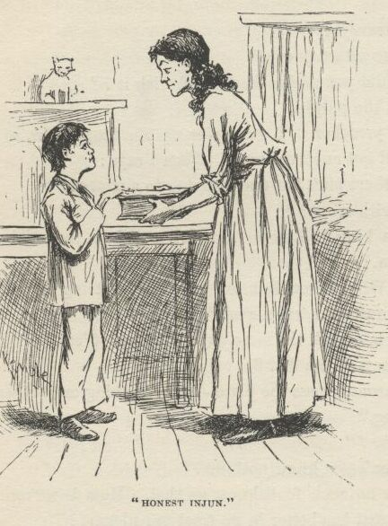
"Honest injun," says I.
"None of it at all?"
"None of it at all. Not a lie in it," says I.
"Lay your hand on this book and say it."
I see it warn't nothing but a dictionary, so I laid my hand on it and said it. So
then she looked a little better satisfied, and says:
"Well, then, I'll believe some of it; but I hope to gracious if I'll believe the rest."
"What is it you won't believe, Joe?" says Mary Jane, stepping in with Susan behind
her. "It ain't right nor kind for you to talk so to him, and him a stranger and so
far from his people. How would you like to be treated so?"
"That's always your way, Maim—always sailing in to help somebody before they're hurt.
I hain't done nothing to him. He's told some stretchers, I reckon, and I said I
wouldn't swallow it all; and that's every bit and grain I did say. I reckon he can stand a little thing like that, can't he?"
"I don't care whether 'twas little or whether 'twas big; he's here in our house and
a stranger, and it wasn't good of you to say it. If you was in his place it would
make you feel ashamed; and so you oughtn't to say a thing to another person that will
make them feel ashamed."
"Why, Mam, he said—"
"It don't make no difference what he said—that ain't the thing. The thing is for you to treat him kind, and not be saying things to make him remember he ain't in his own country and amongst
his own folks."
I says to myself, this is a girl that I'm letting that old reptile rob her of her money!
Then Susan she waltzed in; and if you'll believe me, she did give Hare-lip hark from the tomb!
Says I to myself, and this is another one that I'm letting him rob her of her money!
Then Mary Jane she took another inning, and went in sweet and lovely again—which was
her way; but when she got done there warn't hardly anything left o' poor Hare-lip.
So she hollered.
"All right, then," says the other girls; "you just ask his pardon."
She done it, too; and she done it beautiful. She done it so beautiful it was good
to hear; and I wished I could tell her a thousand lies, so she could do it again.
I says to myself, this is another one that I'm letting him rob her of her money. And when she got through they all
jest laid theirselves out to make me feel at home and know I was amongst friends.
I felt so ornery and low down and mean that I says to myself, my mind's made up;
I'll hive that money for them or bust.
So then I lit out—for bed, I said, meaning some time or another. When I got by myself
I went to thinking the thing over. I says to myself, shall I go to that doctor, private,
and blow on these frauds? No—that won't do. He might tell who told him; then the
king and the duke would make it warm for me. Shall I go, private, and tell Mary Jane?
No—I dasn't do it. Her face would give them a hint, sure; they've got the money,
and they'd slide right out and get away with it. If she was to fetch in help I'd
get mixed up in the business before it was done with, I judge. No; there ain't no
good way but one. I got to steal that money, somehow; and I got to steal it some
way that they won't suspicion that I done it. They've got a good thing here, and they
ain't a-going to leave till they've played this family and this town for all they're
worth, so I'll find a chance time enough. I'll steal it and hide it; and by and by,
when I'm away down the river, I'll write a letter and tell Mary Jane where it's hid.
But I better hive it tonight if I can, because the doctor maybe hasn't let up as
much as he lets on he has; he might scare them out of here yet.
So, thinks I, I'll go and search them rooms. Upstairs the hall was dark, but I found
the duke's room, and started to paw around it with my hands; but I recollected it
wouldn't be much like the king to let anybody else take care of that money but his
own self; so then I went to his room and begun to paw around there. But I see I couldn't
do nothing without a candle, and I dasn't light one, of course. So I judged I'd got
to do the other thing—lay for them and eavesdrop. About that time I hears their footsteps
coming, and was going to skip under the bed; I reached for it, but it wasn't where
I thought it would be; but I touched the curtain that hid Mary Jane's frocks, so I
jumped in behind that and snuggled in amongst the gowns, and stood there perfectly
still.